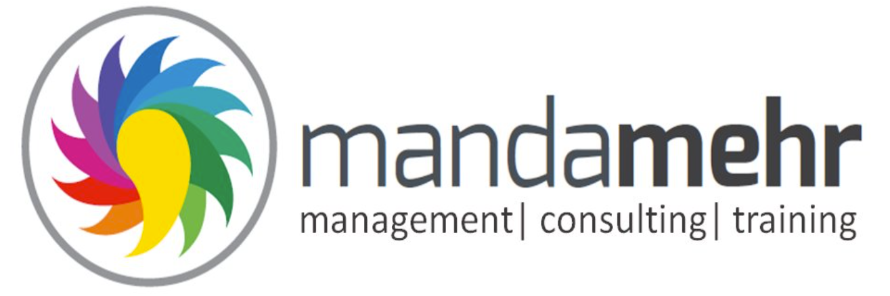
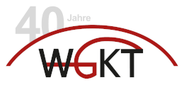
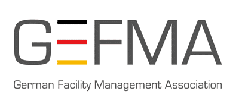
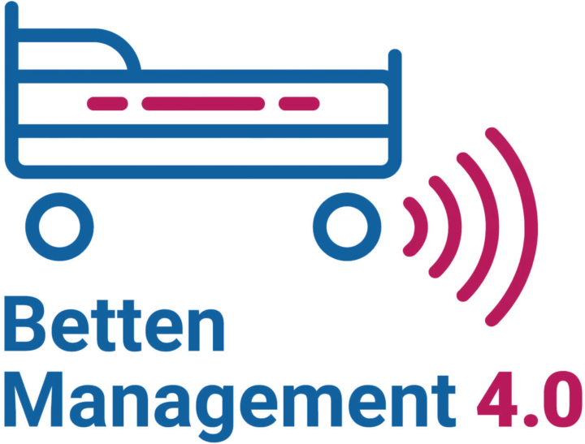
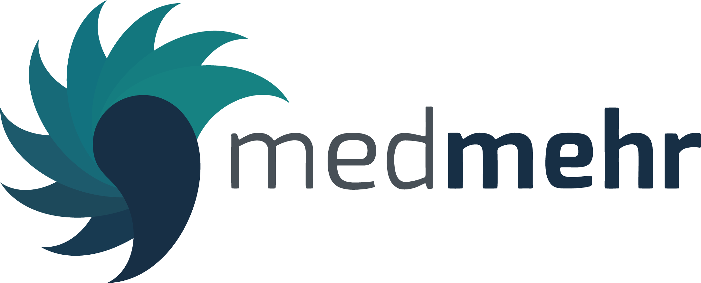
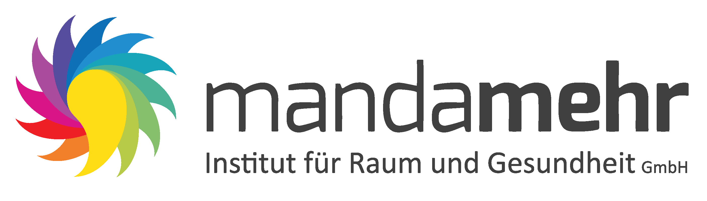
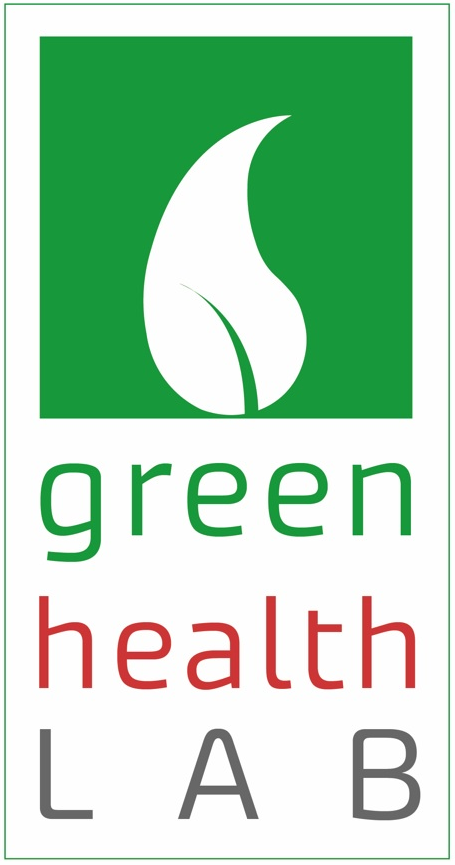

10/2006 - Gründung von hafCON
Mit den Themen:
Logistik, Speisenversorgung,
Sterilgutversorgung, QM,
OP-Organisation

2008 - Gründung von mandamehr
management – consulting – training


2009 - Erstes Kennenlernen
über Projektarbeit der GEFMA / WGKT
Seit 2013 Konzentration auf LOGISTIK-Themen Mikro- u Makrologistik
Projekte:
Planung von Versorgungszentren und Wirtschaftshöfen
Zentrallagerplanung inkl. steriler Medikalprodukte
Gesamtlogistikkonzepte für Klinikergänzungen oder Campusstrukturen
Fachplanerische Begleitung von Baumaßnahmen bzgl. Logistik


2019 - Zusammenarbeit im Forschungsprojekt
„Bettenmanagement 4.0“

2021- Umfirmierung zu mandamehr Institut für Raum und Gesundheit GmbH
2023 - Vertiefung in die AMR-Technologie

2024 - Übernahme des Betriebs des Real Labors „green health LAB“
Seit 2024 - Strategische Partnerschaft
01.01.2025 -Integration hafCON
01.01.2025 -Integration hafCON